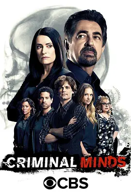

8.6
犯罪心理 第十二季
Criminal Minds Season 12
2016
美国
评分 8.6
导演:
格伦·卡肖 / 拉里·滕 / 阿莱克·斯迈特
演员:
乔·曼特纳 / 马修·格雷·古柏勒 / A·J·库克 / 克斯汀·范奈丝 / 爱莎·泰勒 / 帕姬·布鲁斯特 / 亚当·罗德里格兹
类型:
剧情,悬疑,犯罪
剧情简介
第十二季以动荡开局。随着霍奇因突发事件离队，BAU 在短时间内失去了多年来的核心领袖。团队在情绪尚未平复的情况下便被迫投入连环案件的调查，而普莱提斯的回归与升任，让队伍在短暂混乱后重新拥有方向。她在审讯时的沉稳、现场的果断，在季初便成为团队重新找回节奏的关键。与此同时，新加入的探员 Luke Alvez 带来了不同于以往成员的行动风格。他在追捕逃犯小组的经历，使他对逃逸型罪犯的心理和路线判断格外敏锐。在几次高速追击与现场缉捕中，他的加入迅速减少了团队的磨合成本。而 Alvez 与 Garcia 间微妙的“火花式互动”，也为紧绷的工作氛围带来 rare 的轻松感。瑞德在本季承受了更多个人与职业上的压力，他在分析嫌犯心智时依然敏锐，但身心状态开始显露疲态。母亲病情加重让他在工作之外始终悬着一根弦，而某次出差中的意外更让他被卷入严重危机，为团队带来巨大的心理冲击。JJ 则继续承担着连接现场、受害者家属以及媒体的关键角色，她的稳重与情商，在多起涉及未成年人和家庭的案件中发挥至关重要的作用。本季案件类型复杂多元：有的罪犯以连环“签名式”作案挑战警方；有的将心理控制与身体囚禁结合；也有犯罪者借用都市传说、社会议题或宗教象征来掩饰动机。团队在破案过程中不断面对被层层包装的线索，从一个被忽视的手势、一段反常的停顿，到受害者家中摆放顺序异常的物品，都可能成为关键突破口。贯穿全季的暗线来自一系列逃脱的囚犯暗中串联所形成的潜在威胁，那些被捕多年的人突然重新进入视野，使 BAU 意识到过去的阴影仍可能卷土重来。随着案情不断收紧，团队成员从未像此刻这样需要彼此的支撑。他们在被黑暗围困的深夜仍保持前行，只因为他们知道，每一次成功的侧写，都是让无辜者多一分希望的理由。